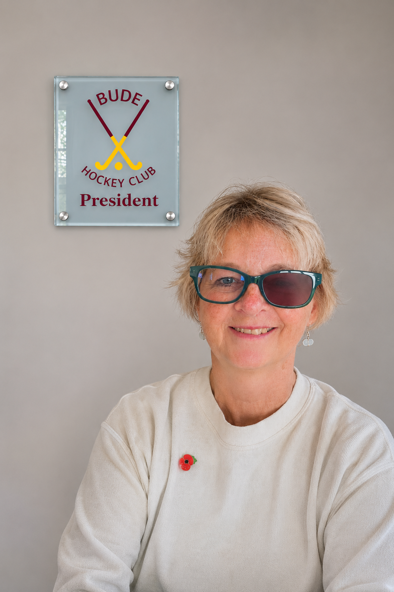
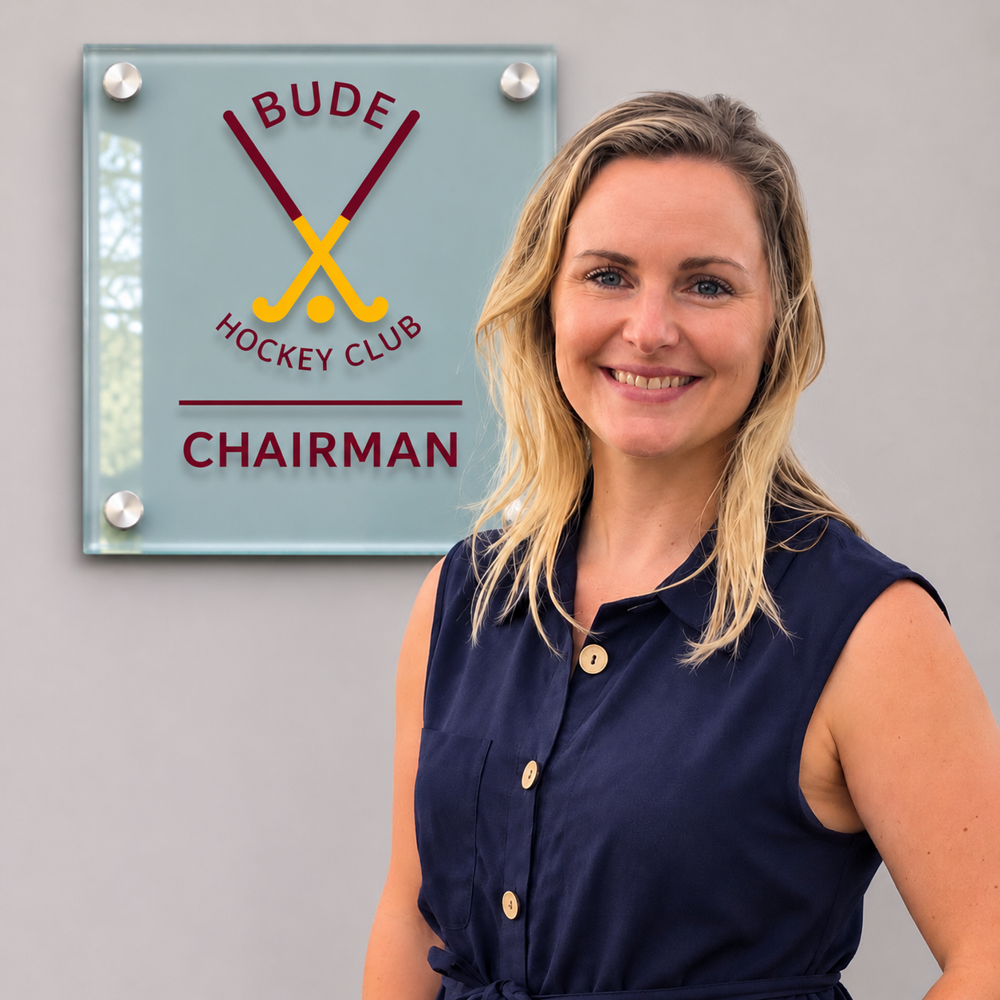
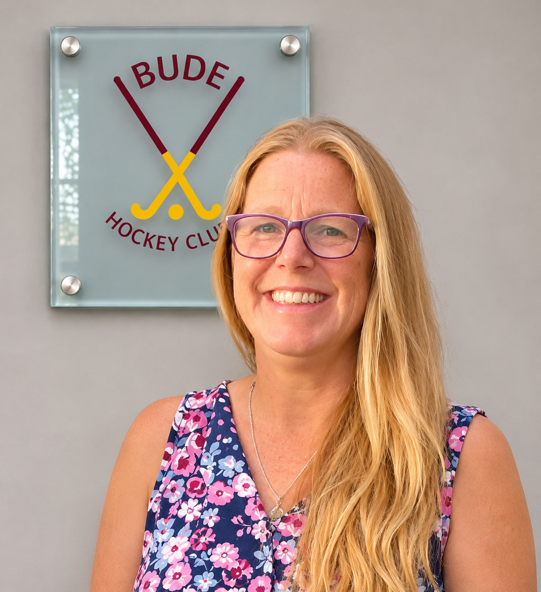
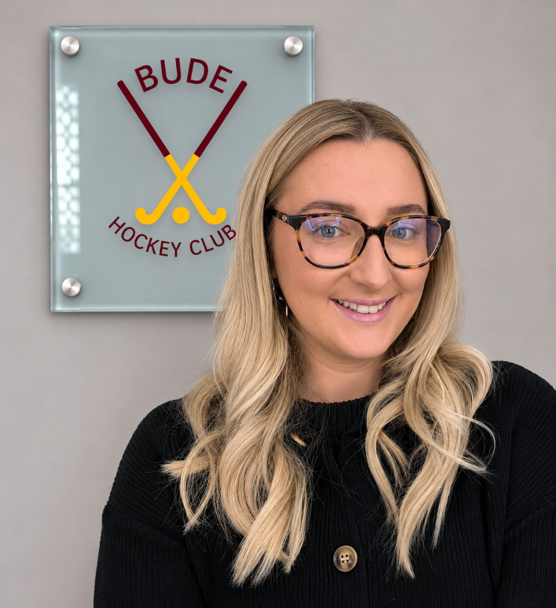
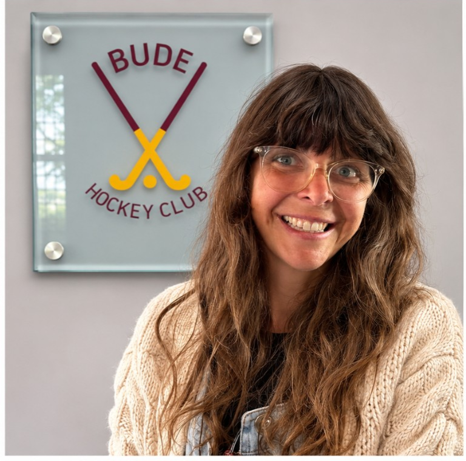

Club people
Meet Bude Hockey Club
Meet the volunteers who run, safeguard, coach and develop Bude Hockey Club.
Committee
Committee Members

PresidentKirsty Heslop

ChairmanClaire Pipe
TreasurerSimon Fry
Co-TreasurerRobin Jennings

Tammy Snowsill
Welfare Officer, Head Coach & Junior Coordinator
07786 623281juniorbudehockey@gmail.com
Secretary & Ladies CaptainChloe Hall
Ladies Vice CaptainCharlotte Kingdon
Men's CaptainSteve McClellan
Men's Vice Captain & Umpire SecretaryHenry GT
Membership SecretaryDebbie Smart

Fundraising SecretaryNaomi Hatcher
Coaching team
Club Coaches
U8sAndy Davis
U10sTammy Snowsill
U12 GirlsNaomi Hatcher
U12 BoysNeil Raey
U14 BoysMartin Raey
U14 GirlsNaomi Hatcher
Ladies 1st Team & Ladies DevelopmentTammy Snowsill, Naomi Hatcher, Briony Varcoe & Cara Phillips
Men's 1st TeamAndy Davis
Men's 2nd TeamMartin Raey